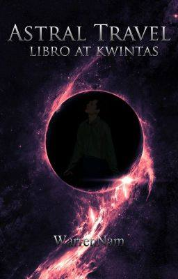

Works by Sufokante
1 Published Story
Astral Travel
Ang mga magulang ni Scott ay isa sa tinatawag na "Astral Traveler." Sila ay may kakayahang makalabas mula sa kanilang pisikal na katawan at largadong nakapaglalakbay sa lugar na tinatawag na "Astral Plane."
Ngunit dahil sa aksidenteng nangyari dulot ng mga masasamang nilalang ay binawian sila ng buhay at sa kaarawan mismo ng kanilang anak. Dahil dito ay hindi na nila nagawa pang ibigay ang regalo nilang Libro at kwintas.
Published at Wattpad
Ito yung kauna-unahang kwento na nagawa ko noong ako ay nasa high-school pa lamang. Kahit ngayon ay hindi pa ito tapos at wala pa ring balak na tapusin, dahil siguro ay nagbago na ang aking hilig at nawalan na ng oras sa pagsusulat. Ngunit babalik at babalik pa rin ako sa mundo ng panitikan. Hindi man ngayon pero pakiramdam ko ay malapit na itong dadating.
Ako yung tipong tao na madalas mong nakikitang nakapolo t-shirt at palaging may baon na panyo. Yung tipong tao na walang pake sa buhok kung ito'y magulo. Yung tipong tao na kapag tinanong, palaging tugon ay iling at tango. At yung tipong tao na palaging nakaupo sa harapan dahil ang paningin ay malabo.
Ngunit hindi ako yung tipong tao na naka eyeglass at antisosyal ang pagkatao. Hindi ako yung tipong nagaaral nang mabuti at palaging nakikilahok sa klase.
Ako ay isa lamang pangkaraniwang estudyante na mahilig magbasa ng libro, mapag-isa, makinig ng kanta, matuto ng iba't ibang wika at minsan sinusubokang gumawa ng tula.
Marami akong gustong masubukan sa buhay ngunit pera ang pangunahing hadlang. Alam kong malabong masubukan at makamtan, lalong-lalo na sa estado ng aking kasalukuyan.Kaya ako napadpad dito dahil kahit papaano natatamasa ko ang kaluguran at pagkasabik na dito ko lang nararanasan.
Pagmulat ng aking mga mata nanginginig at hindi ko magawang maigalaw ang aking buong katawan.
May madulas at mabulang likido ang lumabas mula sa aking tenga at isang napakatulis na siyap naman ang aking narinig.
Mga ilang sandali pa ang lumipas, biglang may sumaksak sa aking binti at nagawa ko nang maigalaw ang buo kong katawan. Walang alinlangan kong tinangal ang nakatusok na patalim sa binti ko, ngunit nang tingnan ko ito; wala man lang bakas ng dugo ang dumanak mula rito.
Isinantabi ko muna ang nasaksihan ko at dali-daling sinundan ang sumaksak sa akin. Sa tulong ng mga yapak nito ay naabutan ko siyang huminto-- See More...
Pagkatapos ng klase naisipan namin ni Andrew at Kevin na pumunta sa libary. May gagawin silang pananaliksik sa isang major subject nila kaya sinabayan ko na lang sila rito dahil wala naman akong gagawin.
Unang tapak ko pa lang sa library ay agad bumati sa akin ang napaka pamilyar na amoy.
Kaaya-ayang amoy. Pakiramdam ko ay galing ito sa mga lebrong natatamaan ng bentilador.
Sandali akong napatigil nang makita ang kabuuan ng library. Malawak ito gaya noong dinadala ako rito ng aking mga magulang. Kahit ang pagkakalagay ng mga gamit dito ay nasa ganoon pa ring posisyon. Kahit ang silyang tumba-tumba na nakalagay lang sa gilid ng librarian ay nandoon pa rin. Ito yung madalas kong ginagamit habang hinihintay ang aking mga magulang. Minsan kasi ay natatagalan sila rito at kung hahanapin ko naman ay laging hindi ko nakikita. Kaya minsan din akong nagagabiha dito sa paghihintay. Subalit hindi ako nakaramdam ng pagkainip dahil parati akong may kalaro na babae. Hindi naman kami pinapagalitan ng katiwala rito ng aklatan dahil pamangkin ng aking ina noon ang nagbabantay rito. . .See More...
Habang naglalakad ay bahagya kaming napatingin sa kalangitan nang makita naming nagkakagulo ang mga ibon at ang mga uwak naman ay nakalambitin sa poste.
Sa 'di inaasahang pangyayari lumindol nang malakas kasabay nito ang malakas na pabugso-bugso ng hangin. Paglabas ng mga estudyante at guro ay patungo ito sa aming kinatatayuan.
Gumalaw ang lupa, umatras ang mga sasakyan, at nataranta nang husto ang lahat; nagsisigawan, nagkagulo ang mga ibon, nagsidasalan ang ilan, at nagkabanggaan ang mga sasakyan.
Ang eksena na ito ay kasing tulad nang napanaginipan ni Kevin at ang imaheng nakita ko sa libro. . .See More...
May naririnig akong mga boses na hindi ko nakikita at bigla kong naalala ang realidad.
"Scott!"
"Scooot!"
"Gumising ka na!" malakas na tili ni Andrew dahilan ng pagmulat ko. Napaatras naman ako bigla nang makita ang muka niya.
"Andrew, a-anong nangyari sa m-mukha mo?. . .See more...
Sana dumating yung araw na makilala kita
Talagang ninanais kong makausap ka
Aalamin ko kung bakit ka ganiyan
Napaka misteryoso ng iyong katangian
Lalapitan, kakausapin, ngunit ano ang aking sasabihin?
Yayain, kikilalanin ngunit ang lahat ng iyon ay napakahirap gawin
Dahil sa marupok mong pagkatao
Elastikong nababanat palubog itong nararamdaman ko para sayo
Lukob ng malambot at pabagubado kong katangian
Iniwasiwas ng matulis mong pag-aalinlangan
Masakit. Mahapdi. Ngunit maaari ko bang masubokan?
Ang pagdikitin at patibayin ang marupok mong santinakpan.
Agosto 27, 2018
Ginawa ko ang tulang ito upang ipahayag ang aking nararamdaman noong nalaman ko na wala na talaga akong pag-asang magustohan sa isa kong matalik na kaibigan.
Tangap ko naman na matagal na niya akong gusto at matagal na itong naglaho. Ngunit sa aking kaloob-looban, sa tingin ko nagaalinlangan siyang sabihin ang katotohanan sa kadahilanang hindi pa siya handa. Hindi pa siya handa sa ano mang bagay na maaaring mangyari kapag sinabi na niya ang totoo. Ewan ko ba kung 'yun talaga ang totoo basta ngayon mas ikabubuti na sigurong itigil ang nararamdaman ko para sa kaniya.
Kaya bilang pamamaalam sa kaniya kasabay ng bawat letra ng tulang pinamagatan "Elastiko," nakaukit sa kauna-unahang titik sa taludtod nito ang kanyang apilyedo.
Noong araw ng Disyembre
Ako'y nagsisimbang gabi
Nakita ko yung babae
Na ngayo'y naging kaklase
Lampas langit akong natuwa
Halos hindi na makapaniwala
Araw-araw ko siyang napanaginipan
Sa ngayo'y araw-araw ko na siyang na titignan
Ito ba'y matatawag na tadhana? O isa lang itong paghanga?
Ano ba ang aking pipiliin?
Lalaliman ko ba ang aking pagtingin?
Kahit sa huli lalong sasakit rin.
O aking ititigil?
Para hindi na masyadong masakit sa damdamin
June 2016

Ako'y nasa lupa
Ika'y nasa langit
Ako ay pangit
Ikaw ay marikit
Bihirang makakita
Ng kawangis mong linikha
Nakakalula, nakakamangha-
ng Pagmasdan ang iyong mukha
Meron kang katulad
Iyon ay bulalakaw
Tulad ng bulalakaw
Pagtingin agad na pumanaw
Kahit saglit lang natanaw
October 15, 2017
Sa Tunog may Kapayapaan,
Dinadama ng kalooban,
May Ningning sa Bituin,
Kumikislap sa Paningin,
Pagpatak ng Ulan,
Pagsingaw ang Dahilan,
Sa Langit may Ulap,
Hangin ay Linalanghap,
May Buhay sa Tubig,
Sa Halaman Dinidilig,
Nalalagas ang Dahon,
Sa paglipas ng panahon,
Paggalaw ng Oras,
Nakaraa'y Lilipas,
Pagdaan ng Bukas,
Alaala'y Kukupas,
Sa Puso may Kirot,
Tinitibok ng Lungkot,
Galit sa katotohanan,
Itinatago sa Kasinungalingan,
Binibigkas ang Salita,
Isinusulat ng Makata,
Bakas ng Tinta,
Sa Kalooban Makikita
Oktubre 23, 2017

Paano ako magiging masaya?
'Pag hindi ko gusto ang aking kasama
Paano ako makikisama?
Kung pakiramdam ko ako'y hindi malaya
Inaaksaya bawat araw at buwan
Sa kakaisip ng kinabukasan
Na Malabo nang masilayan
Na kasama ko kayo, kaibigan
Isang buwan parang taon
Sa kakahintay sa pagdaan ng panahon
Na tayo ay makapag tipon
at mapagusapan ang darating na graduation
tuwing tayo'y magkasama kahit saglit
Puso ko ay lalong sumasakit
Sinusulit bawat sandali
Dahil ang oras ay napakaikli
October 20, 2017

Habang umu-ulan patak ng tubig
Masarap pakingan
Simoy ng hangin
Napakarsariwang damhin
Masarap matulog
Kahit na kumukulog
Ang iba ay naiinis sa kakatiis
Dahil hindi makakaalis
O kaya'y nakakadungis
Bakit ba hindi maiintindihan?
O kaya'y maunawan ng ilan?
Ang kagandahan ng ulan
Na hindi parating napagdadaanan
Subukan kaya nilang Pakingan,
Pagmasdan, tignan, at sabayan,
para sa ganoon maunawan itong lubusan
October 20, 2017
Palihim kong itinatago
ang sekreto mong iniingatan
Gusto kitang magbago
pero ayaw kitang masaktan
Sekretong ikinikimkim
na maghahasik ng lagim
Madaming napeperwisyo
ginawa mo na itong bisyo!
Ano ba talaga ang kanilang kasalanan?
Bakit mo sila sinasaktan?
Kung anu-ano na lang ang iyong dahilan
hindi na kita maunawaan!
Puso mong walang awa
ugali mong ako'y sawang sawa
sinasaktan kahit kapwa
itigil mo na ang iyong pinagagawa!
October 19, 2017
Parents always give comfort
But Sometimes it hurts,
Shelter, food, education,
But never felt this so called "attention."
Am always trying to adapt
But always end up of falling apart
So hard to convince people
With different principle of their own
Suffocate inside a coffin
Breathing fine but mentally screaming
Traped inside a prison
I could escape but I chose to hold on
Afraid that everyone will know
A real me that never been shown
But one day, hoping someone will come
Embrace my negativity and what I am
In the right place at the right time
Sufokante
June 20, 2019
"Mahirap magtiwala sa isang tao lalo na't ito ang dahilan kung bakit tayo nasaktan noon. Ngunit minsan, kailangan nating buksan ang puso't isipan at pakinggan ang panig ng iba. Dahil mahirap na kung maulit muli ang pagkakamali mo noon pa."
Sufokante
Sufokante
January 1, 2019
My new year resolution this year is to continue writing story and poem regardless of my (terrible) way of writing. I know I am not fluent in english and tagalog but I won't let that difficulty hinder my ambition to write. I will strive hard and focus my heart and mind into every piece of my work.
As for now, I'm still thinking of a new plot of my story and I hope It will run smoothly. Happy new year once again haha.
Go to Sufokante...
 Contact Us
About Us
Privacy Policy
Contact Us
About Us
Privacy Policy
Copyright © 2019 by Ernan Sudario